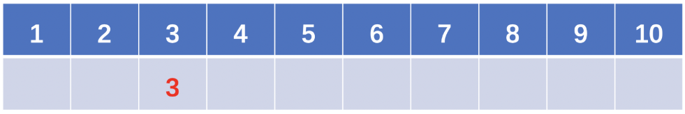
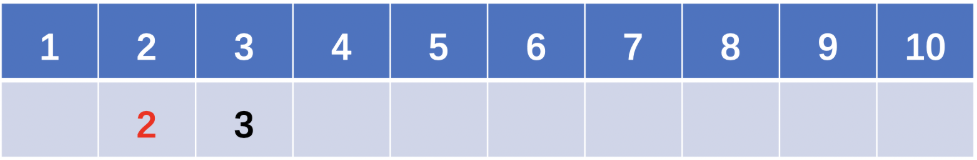
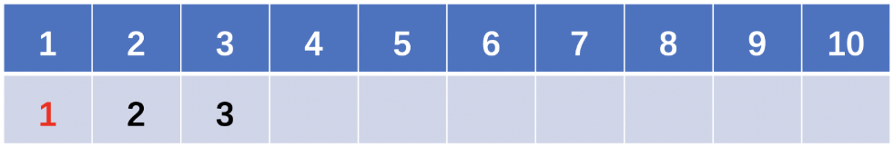
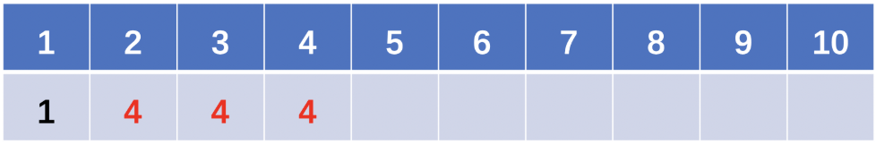
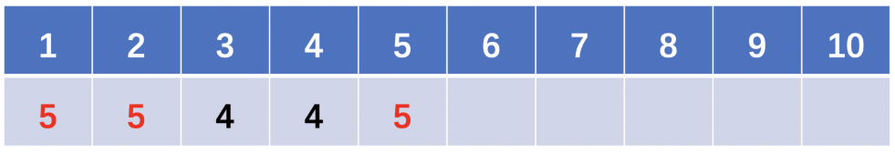
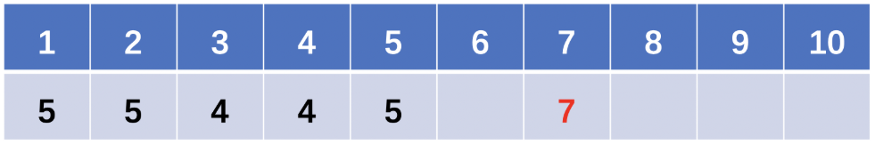

题目
给定整数数组 A，每次 move 操作将会选择任意 A[i]，并将其递增 1。
返回使 A 中的每个值都是唯一的最少操作次数。
示例 1:
1 | 输入：[1,2,2] |
示例 2:
1 | 输入：[3,2,1,2,1,7] |
提示：
0 <= A.length <= 400000 <= A[i] < 40000
思路及代码
解法一：普通排序再遍历
将数组 A 排序，遍历每个元素，如果当前元素小于等于其前面的元素，就将当前元素等于前面元素加1
时间复杂度为 $O(n\log n)$
1 | int minIncrementForUnique(vector<int>& A) { |
解法二：计数法（预存每个数的出现次数）
注意到数组 A 各元素的范围在 [0, 40000) 之间。因此，我们可以开辟一个大小为 40000 的数组 $times$，存储每个数的出现次数。然后遍历数组 $times$，如果某个数 $i$ 的出现次数 $times[i]$ 大于1，那么这个数只留下 1 个，剩下 $times[i]-1$ 个数都 加 1 变为 $i+1$ ，如此循环下去。
时间复杂度为 $O(n)$
1 | int times[40000]; |
解法三：线性探测
该解法摘自 LeetCode
1 | 作者：sweetiee |
这道题可以看作是 把原数组映射到一个地址不冲突的区域，映射后的地址不小于原数组对应的元素。
比如，[3, 2, 1, 2, 1, 7] 就映射成了 [3, 2, 1, 4, 5, 7]
那么这其实和 解决hash冲突的线性探测法很像，只不过这里的探测是单向（往右）的：如果地址冲突了，会探测它的下一个位置，如果下一个位置还是冲突，继续向后看，直到第一个不冲突的位置为止。
但是，直接进行线性探测可以会因为多次冲突导致探测时间太长，因此我们可以考虑在探测的过程中进行路径压缩。
如何路径压缩呢？就是经过某条路径最终探测到一个空位置x后，将这条路径上的值都变成空位置所在的下标x，那么假如下次探测的点又是这条路径上的点，则可以直接跳转到这次探测到的空位置x，从x开始继续探测。
下面用样例2：[3, 2, 1, 2, 1, 7]，来模拟一遍线性探测的过程.
step1: 插入3：

因为3的位置是空的，所以直接放入3即可。（此时数组变成了上图，红色表示本次的更改）
step2: 插入2：

step3: 插入1：

step4: 插入2：

此时我们发现2的位置已经有值了，于是继续向后探测，直到找到空位4，于是2映射到了4。
并且！！我们要对刚刚走过的路径2->3->4进行压缩，即将他们的值都设置为本次探测到的空位4(那么下次探测就可以直接从4往后找了)。
step5: 插入1：

step6: 插入7：

代码如下
1 | class Solution { |